DIY AUDIO PROJECTS | Julio Zúñiga
RECENT PROJECTS
Arduino+MaxMSP-controlled MIDI/servo interface for guitar pedals
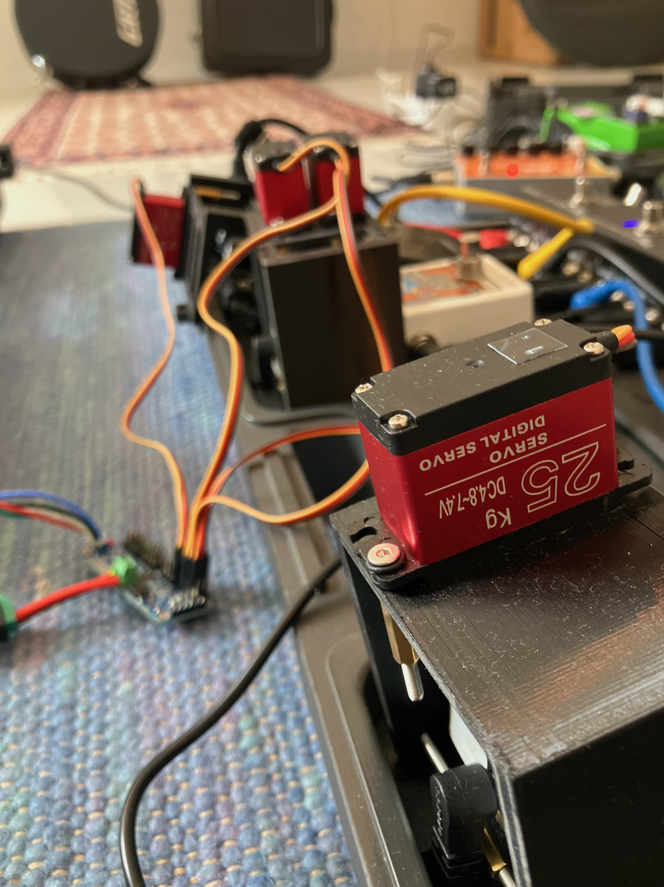
10/2026:
built an interface for routing multiple expression and sustain pedals to my guitar pedals using servo motors that is reconfigurable in real time, combining MaxMSP's configurable GUI with Arduino’s hardware control
for this i'm using an Arduino Mega, an Adafruit 16-channel Servo driver to drive servo motors, MaxMSP, and 3D printing to build chassis that would let me fix the motors to the pedals
what follows is a breakdown of the build steps, with pictures and code
first i needed a hub that would take in several expression pedals and several sustain pedals; i settled on making one that could house 4 exp and 4 sus
i found the individual jacks and a metal box to host the jacks, and i started wiring the TRS and TS ends to my Arduino:
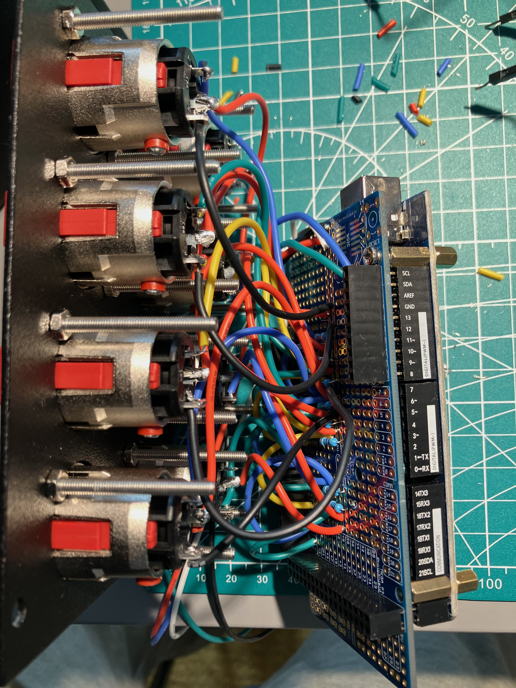
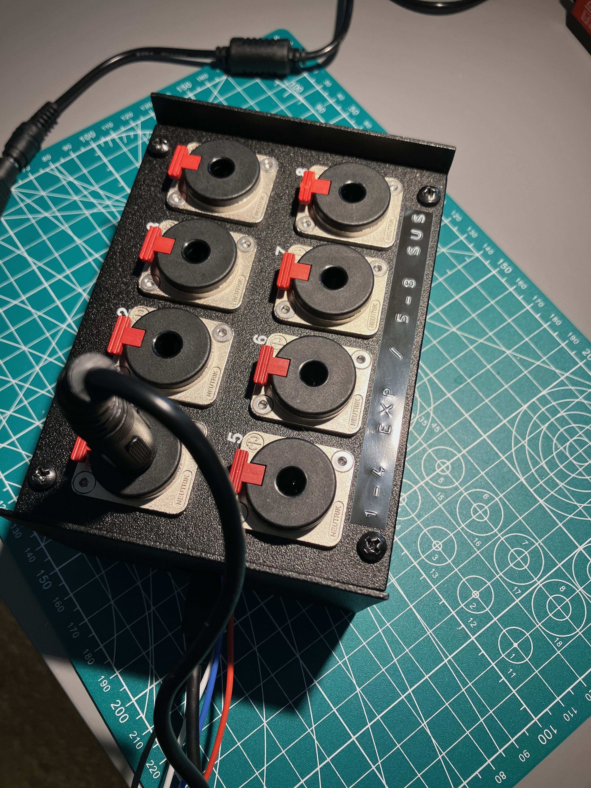
and here is a circuit diagram with TRS/TS wired as inputs on the Arduino Mega (bottom half) and the output to the servo motors (upper half):
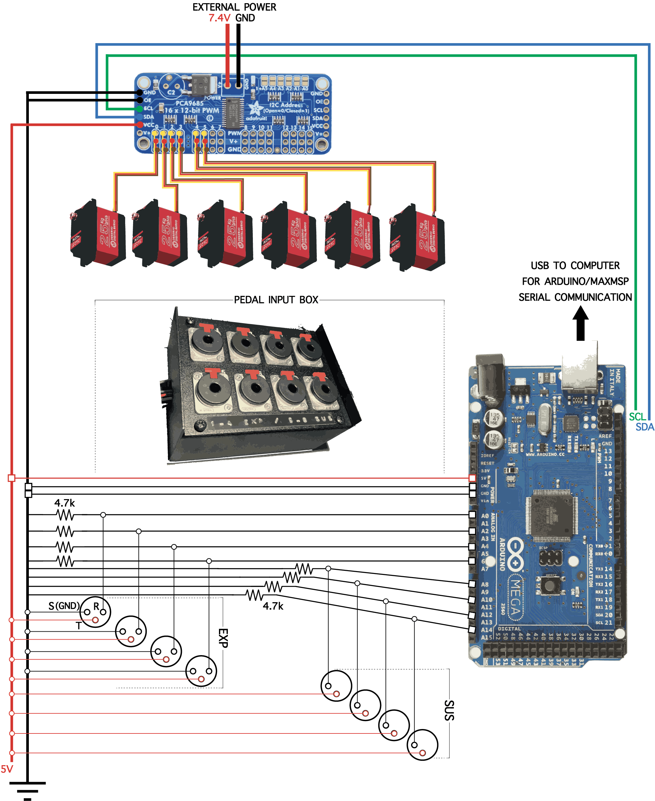
next, Arduino reads the input from the expression and sustain pedals connected to the hub
it also keeps listening for instructions from Max on how the different input signals are mapped to the individual motors, and how each motor's range of movement is defined at any particular moment
#include
#include
#include
#include
/*
Arduino-local pedal-to-servo control with Max preset mapping.
MaxMSP responsibilities:
- Select the active source-to-servo mapping via presets.
- In manual mode, forward eight MIDI CC knob values to the Arduino.
- Send mapping frames: <999,m0,m1,m2,m3,m4,m5,m6,m7>
- Send calibration frames: <998,l1,h1,l2,h2,l3,h3,l4,h4>
- Send mode frames: <997,0|1> (0=pedal mode, 1=manual mode)
- Send manual values frames: <996,v0,v1,v2,v3,v4,v5,v6,v7>
- Continue sending raw readings for all eight pedals to Max. Max uses only
pedals 5-8 (analog inputs 8, 10, 12, 14) for its on/off event logic;
those four inputs are not valid motor-mapping sources.
Mapping values 0..3 select the first four expression-pedal sources. Values
4..7 are reserved for Max-only on/off pedals and are rejected in mappings.
Value 8 means "leave this servo at its current position".
*/
Adafruit_PWMServoDriver pwm = Adafruit_PWMServoDriver();
#define SERVOMIN 100
#define SERVOMAX 600
#define SERVO_FREQ 50
const uint8_t NUM_CHANNELS = 8;
const uint8_t servos[NUM_CHANNELS] = {0, 1, 2, 3, 4, 5, 6, 7};
const uint8_t pedals[NUM_CHANNELS] = {0, 2, 4, 6, 8, 10, 12, 14};
// These reproduce the ranges used by p input-scaling in the Max patch.
const int PEDAL_ADC_MIN[NUM_CHANNELS] = {0, 0, 0, 0, 0, 0, 0, 0};
const int PEDAL_ADC_MAX[NUM_CHANNELS] = {843, 843, 843, 843, 1023, 1023, 1023, 1023};
// Max's default preset1 mapping: servo 1 <- source 3, servo 3 <- source 2,
// servo 5 <- source 1. A mapping value of 8 leaves that servo unmapped.
uint8_t servoSource[NUM_CHANNELS] = {2, 8, 1, 8, 0, 8, 8, 8};
// Expression-pedal calibration: each expression source has input and output
// endpoints, corresponding to the Max scale object's inlets. Max currently
// changes output endpoints; input endpoints default to 0 and 127.
int exprInputMin[4] = {0, 0, 0, 0};
int exprInputMax[4] = {127, 127, 127, 127};
int exprOutputMin[4] = {0, 0, 88, 0}; // p INIT sets expped3lowoutputval to 88
int exprOutputMax[4] = {127, 127, 127, 127};
// An 8-sample rolling average, sampled every 2 ms (~16 ms window).
const uint8_t AVERAGE_SAMPLES = 8;
const unsigned long SAMPLE_INTERVAL_MS = 2;
const unsigned long SERVO_UPDATE_INTERVAL_MS = 20; // 50 Hz
const unsigned long SERIAL_REPORT_INTERVAL_MS = 20;
const int SERVO_DEADBAND = 2;
int sampleHistory[NUM_CHANNELS][AVERAGE_SAMPLES];
long sampleSums[NUM_CHANNELS];
uint8_t historyIndex = 0;
int rawPedalValues[NUM_CHANNELS];
int filteredPedalValues[NUM_CHANNELS];
int sourceValues[NUM_CHANNELS]; // normalized/calibrated source values, 0..127
int lastServoValues[NUM_CHANNELS];
// Manual mode bypasses pedal-source mapping. Max forwards MIDI CC values
// (0..127) for direct one-knob-to-one-servo control.
bool manualMode = false;
int manualValues[NUM_CHANNELS] = {0, 0, 0, 0, 0, 0, 0, 0};
unsigned long lastSampleTime = 0;
unsigned long lastServoUpdateTime = 0;
unsigned long lastSerialReportTime = 0;
const byte numChars = 96;
char receivedChars[numChars];
char tempChars[numChars];
boolean newData = false;
// Forward declarations (also keep non-Arduino C++ compilers happy).
int mapClamped(int value, int inMin, int inMax, int outMin, int outMax);
int normalizePedal(uint8_t i, int rawValue);
void updateSourceValues();
void readAndFilterPedals();
void updateServos();
void reportPedals();
void recvWithStartEndMarkers();
void parseConfigFrame();
int mapClamped(int value, int inMin, int inMax, int outMin, int outMax) {
if (inMax <= inMin) return outMin;
value = constrain(value, inMin, inMax);
return (long)(value - inMin) * (outMax - outMin) / (inMax - inMin) + outMin;
}
int normalizePedal(uint8_t i, int rawValue) {
return mapClamped(rawValue, PEDAL_ADC_MIN[i], PEDAL_ADC_MAX[i], 0, 127);
}
void updateSourceValues() {
for (uint8_t i = 0; i < NUM_CHANNELS; i++) {
int normalized = normalizePedal(i, filteredPedalValues[i]);
if (i < 4) {
// Match the Max p expression-pedal-values scale objects.
sourceValues[i] = mapClamped(normalized,
exprInputMin[i], exprInputMax[i],
exprOutputMin[i], exprOutputMax[i]);
} else {
// Match the existing Max split/gate behavior for susped1..4: values in
// 0..111 close the gate; values above 111 pass through. When the gate is
// closed, the last value is retained by Max's pak objects, so retain it here.
if (normalized > 111) sourceValues[i] = normalized;
}
}
}
void setup() {
Serial.begin(115200);
pwm.begin();
pwm.setOscillatorFrequency(27000000);
pwm.setPWMFreq(SERVO_FREQ);
// Seed the average buffers from current pedal readings so startup does not
// introduce a ramp from zero.
for (uint8_t i = 0; i < NUM_CHANNELS; i++) {
int initialValue = analogRead(pedals[i]);
rawPedalValues[i] = initialValue;
filteredPedalValues[i] = initialValue;
sampleSums[i] = 0;
for (uint8_t j = 0; j < AVERAGE_SAMPLES; j++) {
sampleHistory[i][j] = initialValue;
sampleSums[i] += initialValue;
}
sourceValues[i] = 0;
}
updateSourceValues();
// Initialize only servos that have a valid source in the default mapping.
// Source 8 means unmapped: do not send it an arbitrary startup position.
// A value of -1 marks a servo whose position has not been commanded yet.
for (uint8_t i = 0; i < NUM_CHANNELS; i++) {
uint8_t source = servoSource[i];
if (source <= 3) {
lastServoValues[i] = map(sourceValues[source], 0, 127, SERVOMIN, SERVOMAX);
pwm.setPWM(servos[i], 0, lastServoValues[i]);
} else {
lastServoValues[i] = -1;
}
}
}
void loop() {
unsigned long now = millis();
recvWithStartEndMarkers();
if (newData) {
strcpy(tempChars, receivedChars);
parseConfigFrame();
newData = false;
}
if (now - lastSampleTime >= SAMPLE_INTERVAL_MS) {
lastSampleTime = now;
readAndFilterPedals();
updateSourceValues();
}
if (now - lastServoUpdateTime >= SERVO_UPDATE_INTERVAL_MS) {
lastServoUpdateTime = now;
updateServos();
}
if (now - lastSerialReportTime >= SERIAL_REPORT_INTERVAL_MS) {
lastSerialReportTime = now;
reportPedals();
}
}
void readAndFilterPedals() {
for (uint8_t i = 0; i < NUM_CHANNELS; i++) {
int reading = analogRead(pedals[i]);
rawPedalValues[i] = reading;
sampleSums[i] -= sampleHistory[i][historyIndex];
sampleHistory[i][historyIndex] = reading;
sampleSums[i] += reading;
filteredPedalValues[i] = sampleSums[i] / AVERAGE_SAMPLES;
}
historyIndex++;
if (historyIndex >= AVERAGE_SAMPLES) historyIndex = 0;
}
void updateServos() {
for (uint8_t i = 0; i < NUM_CHANNELS; i++) {
int controlValue;
if (manualMode) {
// Manual mode: MIDI knob 1 controls servo 1, etc.
controlValue = manualValues[i];
} else {
uint8_t source = servoSource[i];
if (source >= NUM_CHANNELS) continue; // 8 = unmapped; hold current position
controlValue = sourceValues[source];
}
int target = map(controlValue, 0, 127, SERVOMIN, SERVOMAX);
if (lastServoValues[i] < 0 || abs(target - lastServoValues[i]) >= SERVO_DEADBAND) {
pwm.setPWM(servos[i], 0, target);
lastServoValues[i] = target;
}
}
}
void reportPedals() {
for (uint8_t i = 0; i < NUM_CHANNELS; i++) {
Serial.print(rawPedalValues[i]);
if (i < NUM_CHANNELS - 1) Serial.print(',');
}
Serial.println();
}
void recvWithStartEndMarkers() {
static boolean recvInProgress = false;
static byte ndx = 0;
while (Serial.available() > 0) {
char rc = (char)Serial.read();
if (recvInProgress) {
if (rc != '>') {
if (ndx < numChars - 1) {
receivedChars[ndx++] = rc;
} else {
// Oversized frame: discard it rather than parsing a truncated command.
recvInProgress = false;
ndx = 0;
}
} else {
receivedChars[ndx] = '\0';
recvInProgress = false;
ndx = 0;
newData = true;
return; // Process one complete frame per loop; preserve queued frames.
}
} else if (rc == '<') {
recvInProgress = true;
ndx = 0;
}
}
}
void parseConfigFrame() {
char *token = strtok(tempChars, ",");
if (token == NULL) return;
long command = atol(token);
// Mode frame: <997,0> or <997,1>
if (command == 997) {
token = strtok(NULL, ",");
if (token == NULL) return;
int requestedMode = atoi(token);
if (requestedMode == 0 || requestedMode == 1) {
manualMode = (requestedMode == 1);
}
return;
}
int values[8];
// Mapping, calibration, and manual-value frames all carry eight values.
if (command != 999 && command != 998 && command != 996) return;
for (uint8_t i = 0; i < 8; i++) {
token = strtok(NULL, ",");
if (token == NULL) return;
values[i] = atoi(token);
}
if (command == 999) {
// Only the first four pedals are valid motor-mapping sources. The second
// set (pins 8, 10, 12, 14) is reserved for Max-only on/off functions.
for (uint8_t i = 0; i < NUM_CHANNELS; i++) {
if (!((values[i] >= 0 && values[i] <= 3) || values[i] == 8)) return;
}
for (uint8_t i = 0; i < NUM_CHANNELS; i++) {
servoSource[i] = (uint8_t)values[i];
}
} else if (command == 998) {
for (uint8_t i = 0; i < 8; i++) {
if (values[i] < 0 || values[i] > 127) return;
}
for (uint8_t i = 0; i < 4; i++) {
exprOutputMin[i] = values[i * 2];
exprOutputMax[i] = values[i * 2 + 1];
}
updateSourceValues();
} else if (command == 996) {
for (uint8_t i = 0; i < NUM_CHANNELS; i++) {
if (values[i] < 0 || values[i] > 127) return;
}
for (uint8_t i = 0; i < NUM_CHANNELS; i++) {
manualValues[i] = values[i];
}
}
// All other frames (including legacy target-value lists) are ignored.
}
a first version of the Max patch used to read Arduino's input data through a shared serial port, reinterpret it as MIDI, and reconfigure it as needed, before sending it back to the serial port for Arduino to read and control to the servo motors
since this resulted in unnecessary lags, i built a new patch that reads the data, but is mostly in charge of sending mapping commands to Arduino so i can reconfigure how the input data is distributed; Arduino drives the servos locally, removing the need to wait for Max for these commands
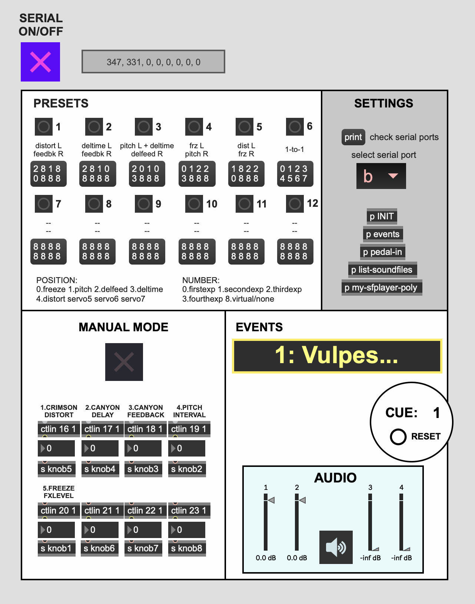
an additional feature that was important me was to have a way to 'exit' this system and enter a manual mode, where each motor can be controlled 1-to-1 using knobs on a MIDI controller – in other words, a way to access each guitar pedal knob directly, the way you would if none of this was between your hands and the guitar pedals
write to me if you want the max patch!
the last step was then to 3D design and print chassis for each motor that would be attached to a knob on each analog guitar pedal; here is the autocad 3D design of one of these before 3D printing:
and the 3D printed chassis with servos mounted:
aaaand... ✨THE FINISHED SETUP!✨
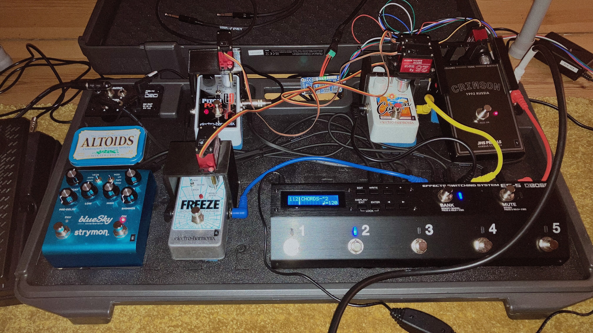
recorded my album, Lucrecio using this system
+++
OLDER PROJECTS
made my own passive studio monitors in the summer of 2019 (thanks to parts-express in OH!)
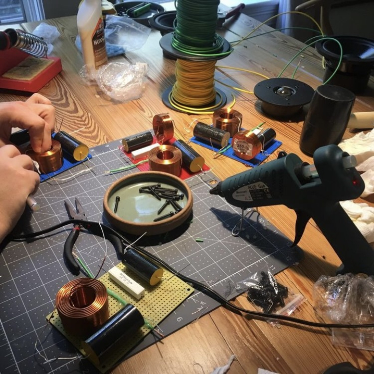
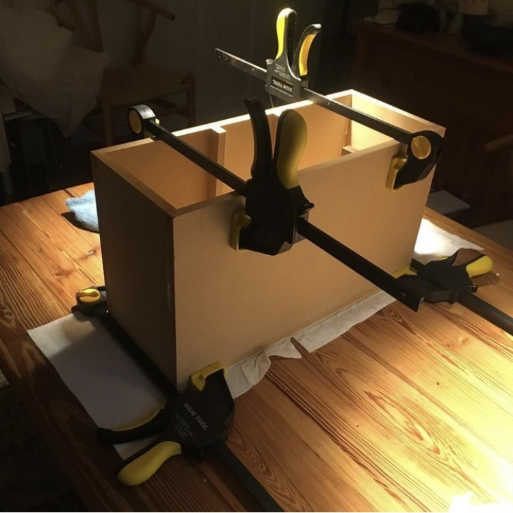
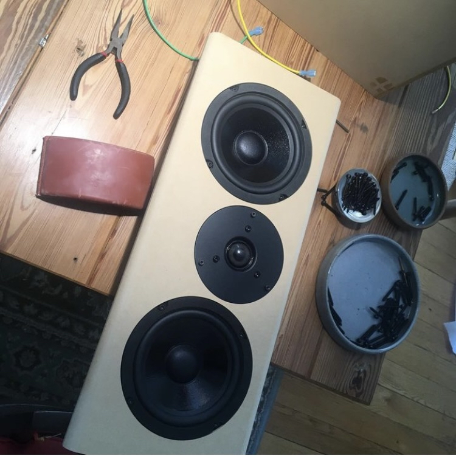
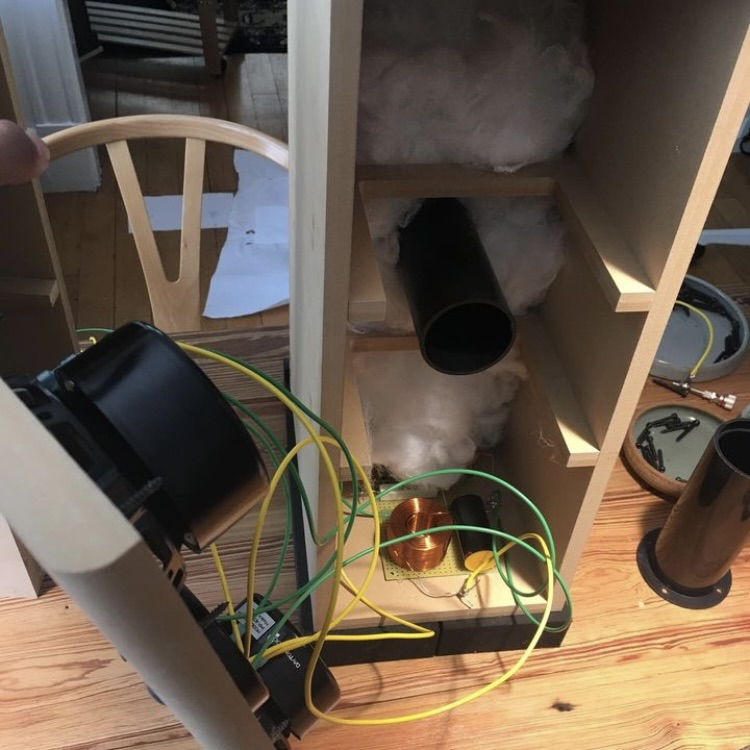
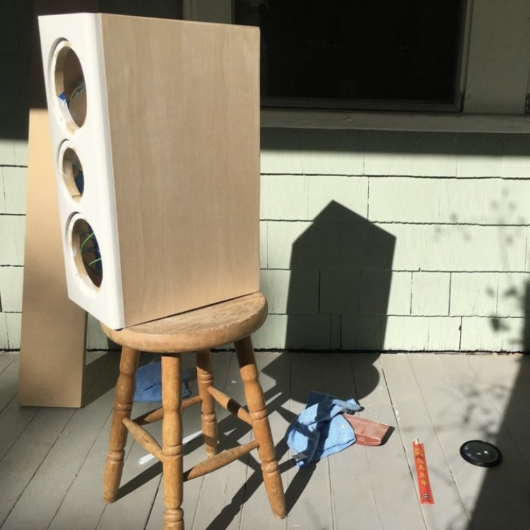
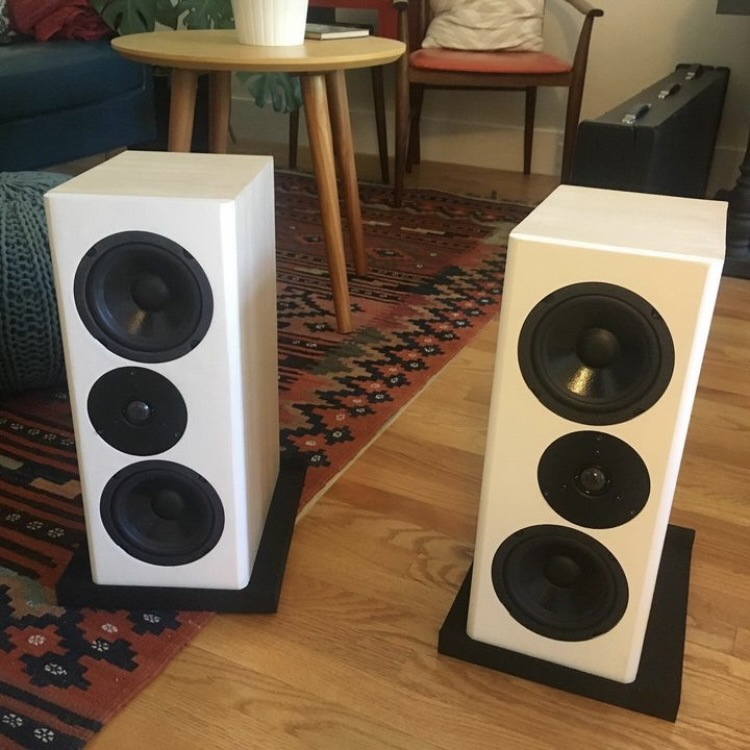
+++
these photos document the process of putting together my first "lunchbox" for 500-series format mic preamps in early 2020, from CAPI gear
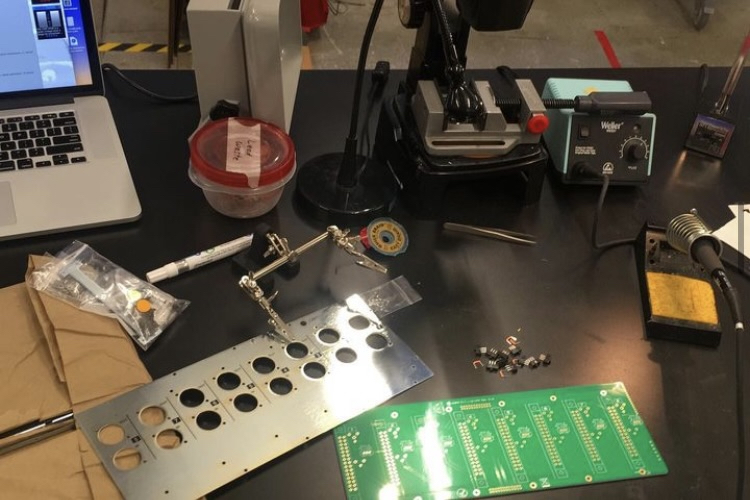
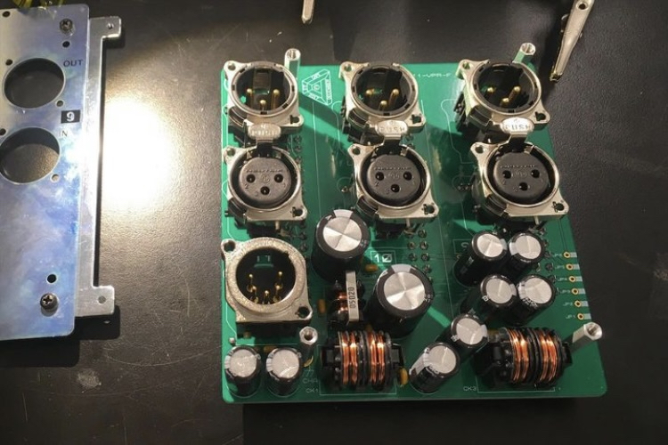
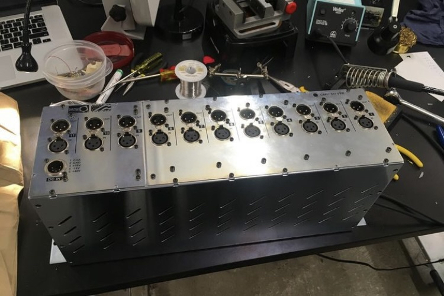
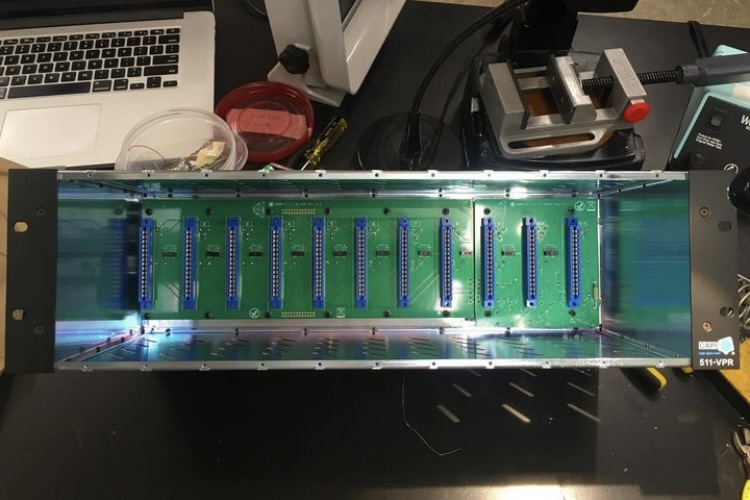
+++
and this was my first preamp, from DIYRE
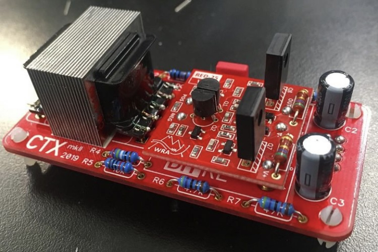
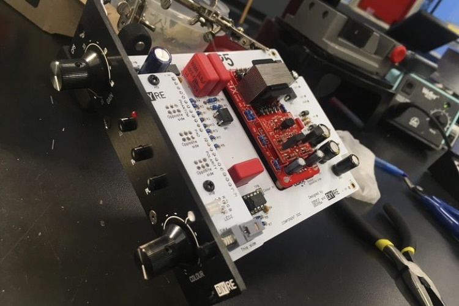
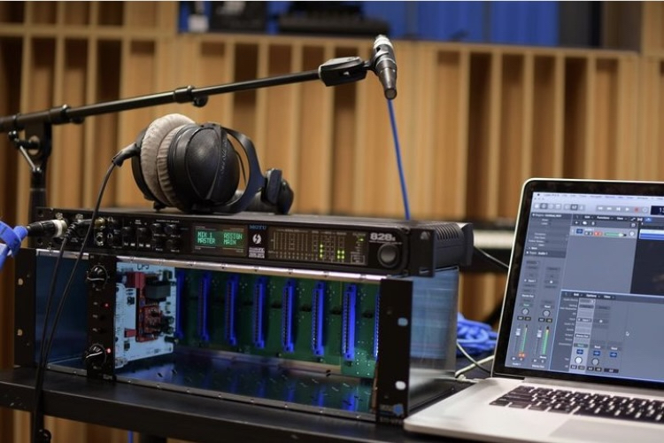
+++
also built my own guitar pedal
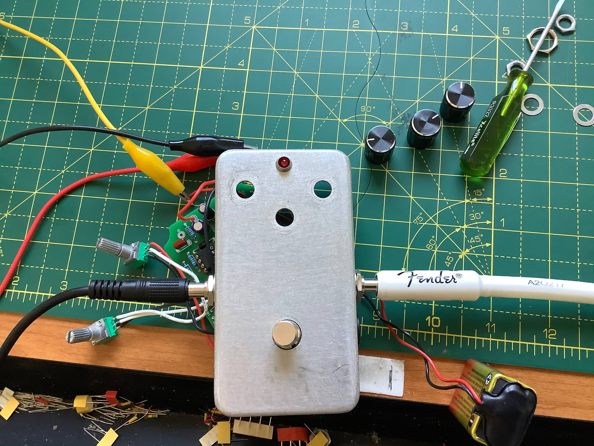
---
the pandemic interrupted this process a bit, but my third and fourth preamps are finally coming together right now
two Baby Animal 500 from JLM Audio Australia
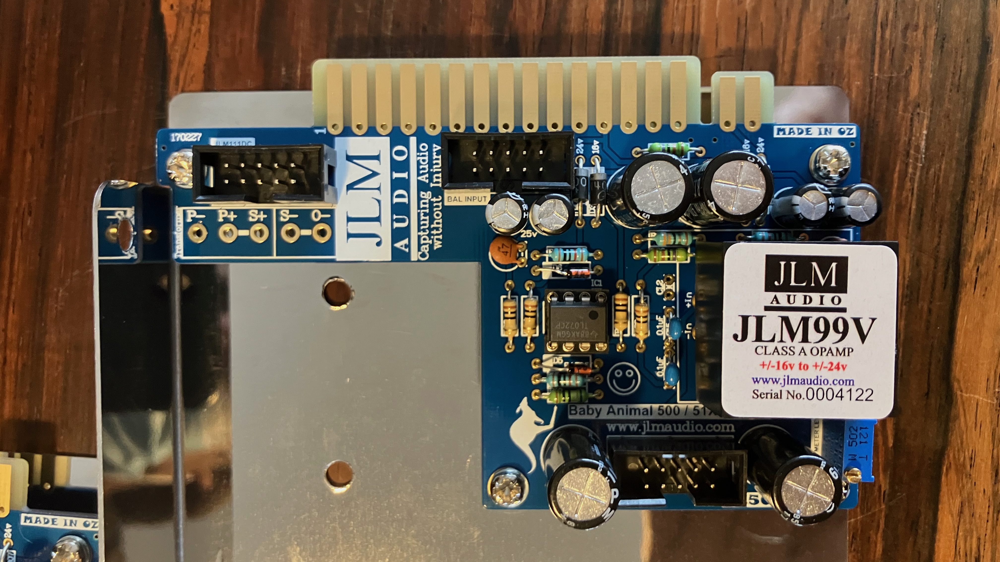
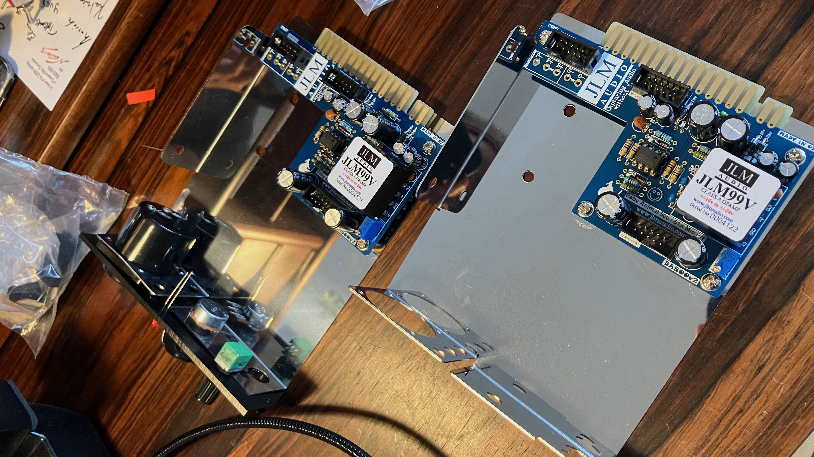
---
My goal currently is to complete my lunchbox with six more DIY 500-series preamps and use this expanded setup to continue recording my own music and audio projects, as well as imparting analog sonic character to my freelance audio engineering engagements
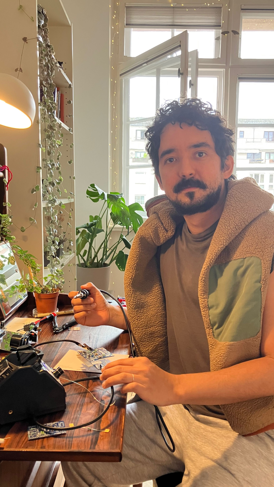
---